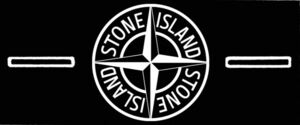

Trade Mark Journal No.2025/029 18 July 2025
WO0000001861974 (3,14,16,28)
Office of origin: Italy
Date of International Registration:20 December 2024
Date of designation in the UK:
20 December 2024

The trademark consists of an imprint depicting a horizontal rectangular label inside which, centrally, a stylized compass rose with only four cardinal directions is arranged superimposed on an annulus inside which is arranged the wording STONE ISLAND in fancy characters, repeated twice, each word arranged circularly inside one of the four quadrants, there being a horizontal substantially rectangular frame of smaller dimensions arranged to the left and to the right of the annulus.
International priority date claimed: 30 July 2024
(Italy)
(302024000121720)
- Class 3
- Perfumes; perfumery; eau de toilette and eau de Cologne; deodorants for human beings or for animals; incense; joss sticks; air fragrancing preparations; sachets for perfuming linen; air fragrance reed diffusers; scented room sprays; extracts of flowers [perfumes]; potpourris [fragrances]; wax melts [fragrancing preparations]; agarwood [incense]; essential oils for personal use; oils for toilet purposes; henna [cosmetic dye]; make-up; eye shadow; cosmetic pencils; eyeliner; foundation; foundation creams; make-up powder; pressed face powder; creamy face powder; face powder [for cosmetic use]; talcum powder, for toilet use; blusher; lipsticks; lipstick cases; lip glosses; non-medicated lip balms; cocoa butter for cosmetic purposes; mascara; sunscreen preparations; sun- tanning preparations [cosmetics]; skin bronzing creams; self-tanning creams; sun-tanning creams and lotions; after-sun creams and preparations; sun protectors for lips [cosmetics]; cosmetic preparations to protect against sunburn; nail polish; nail polish removers; nail glitter; beauty masks; facial scrubs [cosmetic]; skin exfoliants; face creams for cosmetic purposes; cosmetic body creams; cosmetic creams; pomades for cosmetic purposes; cosmetic preparations for slimming purposes; creams for cellulite reduction for cosmetic use; hair sprays; cosmetic hair lotions; hair bleaching preparations; hair dyes; hair coloring preparations; hair rinses [shampoo-conditioners]; hair lighteners; hair conditioners; hair moisturizers; preparations for the permanent waving of hair; gels, sprays, mousses and balms for hair styling and hair care; brilliantine; depilatory preparations; depilatory creams; hair straightening preparations; tissues impregnated with make-up removing preparations; phytocosmetic preparations; nail art stickers; false nails; adhesives for cosmetic purposes; nail conditioners; cotton sticks for cosmetic purposes; pre-moistened or impregnated cleansing pads, tissues or wipes; cosmetic patches containing sunscreen and sun block for use on the skin; facial concealer; under-eye enhancers; non-medicated foot creams; skin whitening creams; bleaching preparations [decolorants] for cosmetic purposes; massage gels, other than for medical purposes; cleansing milk for toilet purposes; hair mascara; gel eye masks; decorative transfers for cosmetic purposes; cotton wool for cosmetic purposes; cloths impregnated with a detergent for cleaning spectacles; eye-washes, not for medical purposes; antiperspirants [toiletries]; make-up removing preparations; micellar water; body paints for cosmetic purposes; cotton wool impregnated with make-up removing preparations; cosmetics; body glitter; double eyelid tapes; cooling sprays for cosmetic purposes; disposable steam- heated masks, not for medical purposes; dressings for nail reconstruction; cosmetic stamps, filled; essential oils for aromatherapy use; bath tea for cosmetic purposes; sheet masks for cosmetic purposes; toners for cosmetic purposes; essential oil-based creams for aromatherapy use; serums for cosmetic purposes; skin hydrators for cosmetic purposes; hand soap; cosmetic soap; facial soaps; non-medicated soap; skin cleansing creams; skin cleansing lotions; shower gel; bubble bath for cosmetic use; bath oils, not for medical purposes; bath pearls, not for medical purposes; bath salts, not for medical purposes; cosmetic creams and lotions for face and body care; shaving balms; shaving creams; shaving soap; after-shave balms; after- shave cologne; after-shave lotions; hair shampoos; bath preparations, not for medical purposes; cleansers for intimate personal hygiene purposes, non medicated; mouthwashes, not for medical purposes; non-medicated dentifrices; cosmetic preparations for the care of mouth and teeth; breath freshening preparations for personal hygiene; teeth whitening pens; laundry starch; laundry soap; stain removers; cleaning preparations; rust removing preparations; carpet shampoos; cloths impregnated with a detergent for cleaning; emery; pumice stone; polishing powder; shoe polish; shoe wax; shoe cream; creams for leather; leather bleaching preparations; floor wax; baby lotions [toiletries]; baby oils [toiletries]; baby powder [toiletries]; shampoos for babies; hair conditioners for babies; cosmetics for children; baby wipes impregnated with cleaning preparations; cosmetics for animals; preparations for cleaning, protecting and preserving vehicle surfaces; massage candles for cosmetic purposes.
- Class 14
- Precious metals; gold; palladium; precious stones; jade; imitation jewellery; costume jewellery; trinkets [jewellery and imitation jewellery]; charms [jewellery and imitation jewellery]; silver thread [jewellery]; threads of precious metal [jewellery]; threads of precious metal [jewellery and imitation jewellery]; gold thread [jewellery]; bracelets [jewellery and imitation jewellery]; bracelets made of embroidered textile [jewellery]; cloisonné jewellery; pearls [jewellery]; necklaces [jewellery and imitation jewellery]; lockets [jewellery and imitation jewellery]; chains [jewellery and imitation jewellery]; rings [jewellery and imitation jewellery]; brooches [jewellery and imitation jewellery]; earrings; diadems; medallions [jewellery and imitation jewellery]; medals; pins [jewellery and imitation jewellery]; ornamental pins; tie pins; pendants [jewellery]; cuff links; lanyards [keycords]; key chains [key chains with trinket or decorative fob]; key rings [split rings with trinket or decorative fob]; charms for key rings; key fobs of metal; key rings of leather; key rings, not of metal; split rings of precious metal for keys; key fobs of leather; key fobs of imitation leather; key fobs of common metal; key fobs, not of metal; fancy key holders of precious metal; key holders of precious metal; key holders of metal; key tags of plastic; badges of precious metal; amulets [jewellery and imitation jewellery]; rosaries; paste jewellery [costume jewellery]; hat jewellery; shoe jewellery; shoe ornaments of precious metal; hat ornaments of precious metal; jewellery cases [caskets], not of precious metal; jewellery cases [caskets]; decorative boxes of precious metal; trophies of precious metal; statues of precious metal; figurines [statuettes] of precious metal; statuettes of precious metal; works of art of precious metal; crucifixes as jewellery; crucifixes of precious metal, other than jewellery; jewellery hat pins; retractable key rings; jewellery charms; charms for bracelets; charms for necklaces; commemorative statuary cups of precious metal; prize cups of precious metal; sew-on tags of precious metal for clothing; lanyards for keys; jewellery for pets; clocks; wall clocks; watches; alarm clocks; chronometers; chronographs [watches]; wristwatches; stopwatches; pocket watches; cases for clocks and watches; watch bands; watch straps; watch chains; watch bracelets; jewellery authenticated by non-fungible tokens [NFTs]; works of art of precious metal authenticated by non-fungible tokens [NFTs].
- Class 16
- Magazines [periodicals]; magazines featuring stories, games and learning activities; newspapers; comic strips [printed matter]; newspaper comic strips [printed matter]; pamphlets; pamphlets featuring stories, game and learning activities; booklets; periodicals; newsletters; printed publications; posters; handbooks [manuals]; calendars; catalogues; brochures; flyers; books; books featuring stories, games and learning activities; children's books; children's activity books; coloring books; school writing books; yearbooks; manuals [handbooks]; address books; children's storybooks; children's books incorporating an audio component; coloring pictures; wrapping paper; gift wrapping paper; banners of paper; bunting of paper; writing paper; handkerchiefs of paper; bibs of paper; babies' bibs of paper; bibs, sleeved, of paper; towels of paper; face towels of paper; table linen of paper; place mats of paper; table runners of paper; table napkins of paper; boxes of paper or cardboard; coasters of paper; hat boxes of cardboard; containers made of cardboard; padding materials of paper or cardboard; baggage claim check tags of paper; origami folding paper; baking paper; souvenir banknotes; tissues of paper for removing make-up; patterns for making clothes; sewing patterns; embroidery designs [patterns]; printed patterns; knitting patterns; decorative stickers for helmets; bumper stickers; transfers [decalcomanias]; event albums; sketch books; scratch pads; sketches; architects' models; blueprints; prospectuses; photographs [printed]; graphic reproductions; graphic art reproductions; printed art reproductions; works of art of paper; figurines of papier mâché; engravings; lithographs; lithographic works of art; oleographs; art prints; animation cels; occasion cards; cards bearing universal greetings; gift tags of paper; announcement cards [stationery]; invitation cards; postcards; cards; albums; photographic mounts; photograph albums; stickers [stationery]; sticker albums; photograph mounts of paper or cardboard; bookmarkers; pens [office requisites]; fountain pens; ball-point pens; roller-tip pens; writing pens; felt-tip markers; pencils; pastels [crayons]; crayons; chalks; painting sets for children; drawing brushes; stationery cases; cases of leather for agendas and weekly planners; drawing sets; pen boxes; pencil boxes; pen toppers; pencil toppers; pen cases; pencil cases; penholders; pencil holders; stands for pens and pencils; modelling clay for children; modelling materials and compounds for use by children; covers [stationery]; document files [stationery]; document holders [stationery]; desk mats; desk top organizers; personal organizers; exercise books [blank]; note books; cube-shaped notebooks; notepads; diaries; agendas; weekly planners [stationery]; agenda covers; weekly planner covers; address booklet covers; album covers; book covers; paper creasers [office requisites]; folders [stationery]; labels of paper or cardboard; labels, not of textile; adhesive labels, not of textile; paperweights; page holders; pencil sharpeners, electric or non-electric; drawing pads; papers for painting and calligraphy; adhesive bands for stationery or household purposes; adhesive tape dispensers [office requisites]; adhesive tapes for stationery or household purposes; paper knives [letter openers]; paper cutters [office requisites]; rubber erasers; ink erasers; writing board erasers; erasing products; correspondence holders; passport holders; holders for checkbooks; stationery-type portfolios; illustration boards; paper ribbons, other than haberdashery or hair decorations; stationery; inkstands; clipboards; presentation folders; document portfolios [stationery]; trading cards, other than for games; name badge holders [office requisites]; clips for name badge holders [office requisites]; paper bows, other than haberdashery or hair decorations; protective covers for books; magnetic boards being office requisites; flip charts; floor decals; pens [writing implements] incorporating tips for operating touchscreen devices; conical paper bags; shopping bags of plastic; shopping bags of paper; bags [envelopes, pouches] of paper or plastics for packaging; placards of paper or cardboard; printed advertising boards of paper or cardboard; money clips of precious metal; money clips, not of metal; typewriters, electric or non-electric; name badges [office requisites]; barcode ribbons; plastic bubble film for wrapping; paintings [pictures] authenticated by non-fungible tokens [NFTs].
- Class 28
- Apparatus for games other than those adapted for use with an external display screen or monitor; video game machines; apparatus for games; pocket-sized apparatus for playing video games; pocket-sized video game machines; pocket-sized electronic game machines; hand-held games with liquid crystal displays; portable games with liquid crystal displays; stand-alone video game machines; arcade video game machines; controllers for game consoles; joysticks for video games; video games consoles; hand-held consoles for playing video games; external cooling fans for game consoles; balls for games; counters [discs] for games; bladders of balls for games; ring games; conjuring apparatus; roulette wheels; skittles [games]; shuttlecocks; marionettes; kites; kite reels; quoits; toy vehicles; radio-controlled toy vehicles; remote-controlled toy vehicles; toy cars; kaleidoscopes; masks [playthings]; theatrical masks; play balloons; toy pistols; dolls; dolls' beds; dolls' feeding bottles; dolls' clothes; dolls' houses; dolls' rooms; teddy bears; spinning tops [toys]; puzzles; jigsaw puzzles; parlor games; mobiles for children; building blocks [toys]; flying discs [toys]; scooters [toys]; rocking horses; dominoes; building games; toy construction kits; soap bubbles [toys]; slides [playthings]; novelty toys for playing jokes; butterfly nets; scale model vehicles; playing cards; cases for playing cards; dice; draughts [games]; draughtboards; backgammon games; checkers [games]; table-top games; chess games; chess sets; chess pieces; checkerboards; chessboards; mah-jong; bingo cards; playing balls; nets for sports; race tracks [toys]; darts; swimming pools [play articles]; novelty toys for parties, dances [party favors, favours]; cases for play accessories; Christmas trees of synthetic material; bells for Christmas trees; snow globes; paper party hats; scratch cards for playing lottery games; toys for pets; toy imitation cosmetics; children's play cosmetics; swimming pool air floats; party poppers [party novelties]; toy putty; toy dough; portable games and toys incorporating telecommunication functions; streamers [party novelties]; balloons [party novelties]; party balloons; trading cards for games; boomerangs; inflatable games for swimming pools; play tents; fidget toys; bowling balls; toy glow stick bracelets for parties; hand clappers [noisemaker toys]; card games; playground sandboxes; ball-jointed dolls [BJD]; balls for playing boules games; gaming keyboards; plush characters and animals; rubber character toys; animated and non-animated toy figures; stuffed toys and unstuffed toys in the form of plastic character toys; action figure toys; stuffed puppets; plush toys; stuffed toys; rattles [playthings]; rattles for babies; baby rattles incorporating teething rings; cot musical toys for babies; baby gyms; plush toys with attached comfort blanket; tricycles for infants [toys]; crib toys; crib mobiles [toys]; playhouses for children; toy musical instruments; tables for indoor football; tables for table football; tables for table tennis; golf bags, with or without wheels; golf gloves; golf clubs; golf irons; divot repair tools [golf accessories]; billiard cues; pool cue tips; billiard markers; billiard tables; billiard balls; tennis nets; tennis ball throwing apparatus; tennis rackets; rackets; Badminton rackets; table tennis rackets; strings for rackets; bowling apparatus and machinery; cricket bags; hockey sticks; coin-operated billiard tables; grip tapes for rackets; skis; snow skis; edges of skis; ski brakes; ski poles; ski sticks; ski bindings; shaped covers for ski bindings; shaped covers for skis; bags adapted for skis; sole coverings for skis; seal skins [coverings for skis]; bindings for alpine skis; surf skis; bob-sleighs; discuses for sports; surfboards; sleds [sports articles]; snow sleds for recreational use; sailboards; snowboards; stationary exercise bicycles; machines for physical exercises; foils for fencing; bar-bells; appliances for gymnastics; fencing weapons; climbers' harness; mountaineering equipment, namely, ascenders, binding straps being parts of harnesses; paragliders; hang gliders; skateboards; spring boards [sports articles]; twirling batons; harness for sailboards; masts for sailboards; paintball guns [sports apparatus]; surfboard leashes; starting blocks for sports; sling shots [sports articles]; horizontal bars for gymnastics; weight lifting belts [sports articles]; exercise bars; exercise platforms; poles for pole vaulting; skipping ropes; batting gloves [accessories for games]; fencing gauntlets; exercise pulleys; exercise benches; jumping ropes; body-building apparatus; body- training apparatus; archery implements; punching bags for boxing; roller skates; in-line roller skates; ice skates; skating boots with skates attached; boxing gloves; baseball gloves; gloves for games; snowshoes; swimming belts; swimming rings; swimming kickboards; flippers for swimming; water wings; arm floats for swimming; swimming jackets; inflatable floats for swimming; swim floats for recreational use; hunting game calls; fishing tackle; rods for fishing; fishing lines; bows for archery; camouflage screens [sports articles]; rhythmic gymnastics ribbons; floats for swimming; swimming gloves; flippers for diving; swimming webs; webbed gloves for swimming; roller skis; ski sticks for roller skis; ski poles for roller skis; yoga swings; golf bag tags; bags especially designed for skis; bags especially designed for surfboards; protective cups for sports; skeleton sleds; exercise weights; cone markers for sports; hoops for exercise incorporating measuring sensors; adhesive abdominal exercise belts, electric, for muscle stimulation; electric muscle stimulation bodysuits for sports; weight vests for physical training purposes; abdomen protectors for sports; kick pads for martial arts.
MONCLER S.P.A.
Representative: Dr. Modiano & Associati SpA, Via Meravigli 16, I-20123 Milano, ITALY